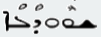
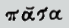
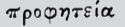
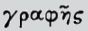

J.W. Etheridge
THE SECOND EPISTLE OF PETROSJames Murdock
The Second Epistle of PeterGeorge Lamsa
THE SECOND EPISTLE GENERAL OF PETER[JE]
SHEMUN PETROS, a servant of Jeshu Meshiha,
to those who by faith the same in preciousness1
with us have been made equal, through the righteousness of
our Lord and our Redeemer Jeshu Meshiha.
1or, honour. Gr.
 ejusdem pretii et dignitatis. -- Schleusner.
ejusdem pretii et dignitatis. -- Schleusner.
[JM]
SIMON PETER, a servant and legate of Jesus the Messiah,—to those who have obtained equally precious faith with us, though the righteousness of our Lord and Redeemer, Jesus the Messiah;—
[GL]
SIMON PETER, a servant and apostle of Jesus Christ, to those who through the righteousness of our LORD and Saviour Jesus Christ have been made equal with us in the precious faith;
[JE]
Grace and peace be multiplied to you through the knowledge of our Lord Jeshu Meshiha.
[JM]
May grace and peace abound to you through the recognitiona of our Lord Jesus the Messiah,
aor, acknowledgment.
[GL]
Grace and peace be multiplied to you through the knowledge of our LORD Jesus Christ,
[JE]
As He who all (things) which of the divine power are unto life and godliness2 hath given (us), through the knowledge of Him who hath called us unto the glory of him and of virtue,3 by annunciations4 great and precious
2Dechalath Aloha, the fear, reverence, or worship of Aloha.
3Or, excellence. B’teshbuchtho dileh va-damyathrutho.
4
Nunciatio, promissum:from
 to know, make known.
to know, make known.
[JM]
as the giver to us of all things that be of the power of God, unto life and the fear of God, through the recognition of him who hath called us unto his own glory and moral excellence:
[GL]
Who has given us all things that pertain to the power of God, for life and worship of God, through the knowledge of him who has called us by his glory and excellence;
[JE]
which he hath given to you, that by them you may be partakers of the divine nature, while you escape the corruption of the lusts which are in the world;
[JM]
wherein he hath given you very great and precious promises; that by them ye might become partakers of the nature of God, while ye flee from the corruptions of the lusts that are in the world.
[GL]
Whereby are given unto us exceeding great and precious promises: that by these you might be partakers of the divine nature, having escaped the corruption that is in the world through lust.
[JE]
So, with this, bringing in all diligence,5 add to your faith virtue; but to virtue knowledge, but to knowledge perseverance,
5Or , gravity. Shekoltano.
[JM]
And, while ye applyb all diligence in the matter, add to your faith moral excellence; and to moral excellence, knowledge;c
bSy. introduce.
cor, intelligence.
[GL]
And beside this, giving all diligence, add to your faith, virtue; and to virtue, knowledge ;
[JE]
but to knowledge perseverance, but to perseverance patience, but to patience godliness,2
[JM]
and to knowledge, perseverance; and to perseverance, patience; and to patience, the fear of God;
[GL]
And to knowledge, self-control; and to self-control, patience; and to patience; godliness;
[JE]
but to godliness brotherly kindness, but to brotherly kindness love.
[JM]
and to the fear of God, sympathy with the brotherhood; and to sympathy with the brotherhood, love.
[GL]
And to godliness, brotherly kindness; and to brotherly kindness, love.
[JE]
For while these are found with you, and abound, neither slothfulness nor unfruitfulness will stand against you in the knowledge of our Lord Jeshu Meshiha.
[JM]
For, while these are found in you, and abounding, they render you not slothful, and not unfruitful, in the recognition of our Lord Jesus the Messiah.
[GL]
For when these things are found among you and abound, you are not empty nor unfruitful in the knowledge of our LORD Jesus Christ.
[JE]
For he with whom these are not found is blind, and seeth not, and hath forgotten the purification of his former sins.
[JM]
For he, in whom these things are not found, is blind and seeth not, and hath forgotten the purgation of his former sins.
[GL]
But he who lacks these things is blind, and cannot see afar off, and has forgotten that he was cleansed from his former sins.
[JE]
Upon this the more, my brethren, be careful, that by your good works your calling and your election you may confirm;6 for, while you do these, you will never lapse;7
6OR, make sure.
7meshtarin, from shara, lapsus est, deliquit, transgressus est.
[JM]
And therefore, my brethren, be ye exceedingly diligent to make your calling and election sure,d by your good actions: for, by so doing, ye will never fall away.
dSy.
[GL]
For this very reason, my brethren, be diligent; for through your good deeds, you make your calling and your election sure: and when you do these things, you shall never fall:
[JE]
for so abundantly shall be given to you the entrance of the eternal kingdom of our Lord and our Saviour Jeshu Meshiha.
[JM]
For thus will entrance be given you abundantly, into the everlasting kingdom of our Lord and Redeemer Jesus the Messiah.
[GL]
For by so doing, an entrance shall be given freely to you into the everlasting kingdom of our LORD and Saviour Jesus Christ.
[JE]
Wherefore it doth not weary me to remind you constantly of these, that you may know well, and be established upon this truth.
[JM]
And for this reason I am not wearied in reminding you continually of these things; although ye know them well, and are established in this truth.
[GL]
Wherefore I will not be negligent to put you always in remembrance of these things, though you know them well; and you rely on this very truth.
[JE]
But I consider it right, so long as I am in this body,8 to stir you up in remembrance
8Bephagro hono.
[JM]
And it seemeth right to me, so long as I am in this body, to excite you by monition;
[GL]
Therefore I think it is right, as long as I am in this body, to stir you up by putting you in remembrance;
[JE]
knowing that the decease of my body is shortly (to be,) as also our Lord Jeshu Meshiha hath made me know.
[JM]
since I know, that the demise of my body is speedy, as also my Lord Jesus the Messiah hath showed me.
[GL]
Knowing that shortly I must depart this life, even as our LORD Jesus Christ has shown me.
[JE]
But be careful also that (these) you may continually have; that also after my going forth the memorial of them you may observe.
[JM]
And I am anxious,e that, after my departure, ye too may have it always with you to make mention of these things.
eSome copies: strive ye.
[GL]
Be diligent always, that you may be able to keep these things in remembrance; even after my departure.
[JE]
For it is not after fables which are made with art that we have gone, in making known to you the power and coming of our Lord Jeshu Meshiha, but as we were spectators of his majesty.
[JM]
For we have not gone after fables artfully framed in making known to you the power and advent of our Lord Jesus the Messiah; but [it was] after we had been spectators of his majesty.
[GL]
For we have not followed cunningly devised fables, when we made known to you the power and coming of our LORD Jesus Christ, for we were eye-witnesses of his majesty.
[JE]
For when he received from Aloha the Father honour and glory, while a voice came to him as this, after the glorious beauty of his majesty, This is my Son, the Beloved, in whom I have delighted;
[JM]
For, when he received from God the Father honor and glory, and, after the splendid glory of his majesty, a voice came to him, thus: This is my beloved Son, in whom I am well pleased;
[GL]
For he received from God the Father honor and glory, when there came such a voice to him from the excellent and majestic glory, This is my beloved Son, in whom I am well pleased.
[JE]
we also this voice heard from heaven, as it came to him when we were with him in the holy mount.
[JM]
we also heard this identical voice heaven, which came to him while we were with him in the holy mount.
[GL]
And this very voice which came from heaven we also heard when we were with him on the holy mount.
[JE]
We have that which is sure also, the word of prophecy; that into which you do well to look, as to a light shining in a dark place, until the day dawn, and the sun arise in your hearts.
[JM]
And we have moreover a sure word of prophecy; and ye will do well, if ye look to it as to a light that shineth in a dark place, until the day shall dawn, and the sun shall arise in your hearts;
[GL]
We have also a true word of prophecy; you do well when you look to it for guidance, as you look to the lamp that shines in a dark place until the dawn of day, when the sun will shine in your hearts:
[JE]
While this first you know, that every prophecy of the scripture its own solution9 is not.
9or, every prophecy the solution of its scripture is not. Cul nebiutho shorio dacthobo dilo lo hovo.
[JM]
ye having the previous knowledge, that no prophecy is an exposition of its own text.f*
fi.e. is not its own expositor.* * The Greek of this difficult passage reads:



.
The Syriac requires
for
 and then, supposing
to depend on
,
it obtains the significant interpretation, that no prophecy explains itself, and consequently cannot
well be understood, until its fulfillment shall make it clear.
and then, supposing
to depend on
,
it obtains the significant interpretation, that no prophecy explains itself, and consequently cannot
well be understood, until its fulfillment shall make it clear.
[GL]
Knowing this first, that not every prophetic writing is made clear in its own book.
[JE]
For not by the will of man came any prophecy, but while by the Holy Spirit led spake the holy men of God.
[JM]
For at no time was it by the pleasure of man, that the prophecy came; but holy men of God spoke, as they were moved by the Holy Spirit.
[GL]
For the prophecy did not come by the will of man: but the holy men of God spoke when they were inspired by the Holy Spirit.